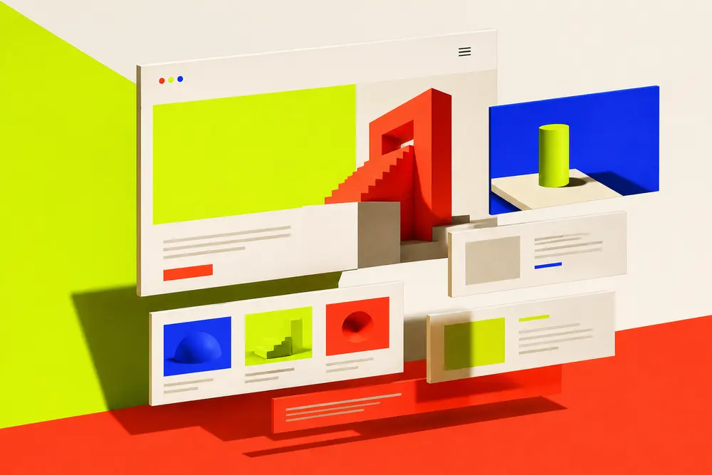

★ Estrella
Open
Open
Len
Builder + IA · Live

// builder.openlenDescribe una página, edítala y publícala en tu propio subdominio. La IA pone la estética.
OpenLen genera páginas así: 57KB · 1.2s · 100 Lighthouse
Next.jsGeminiRustSelf-host
Ver en vivo ↗